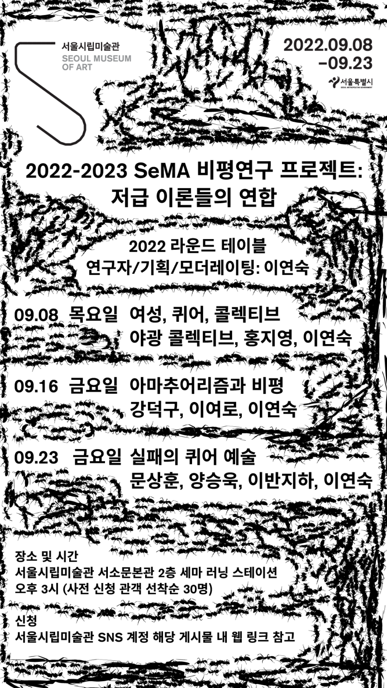
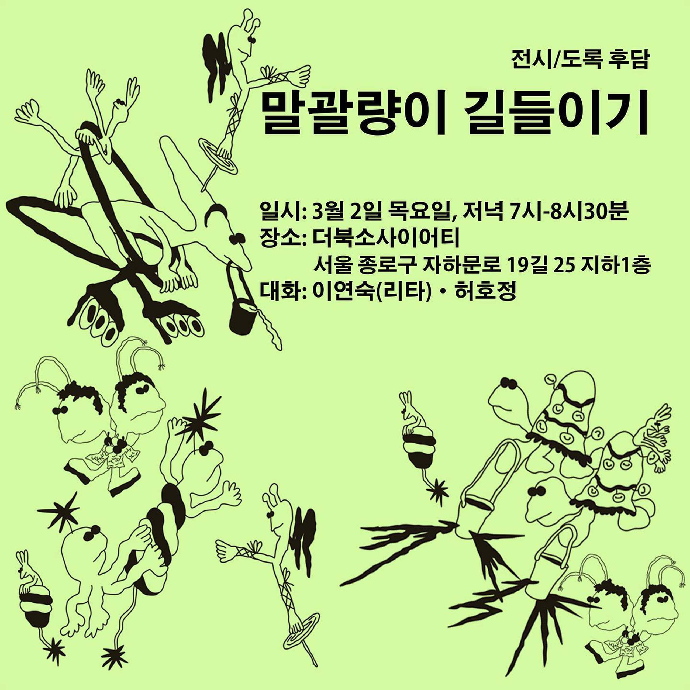
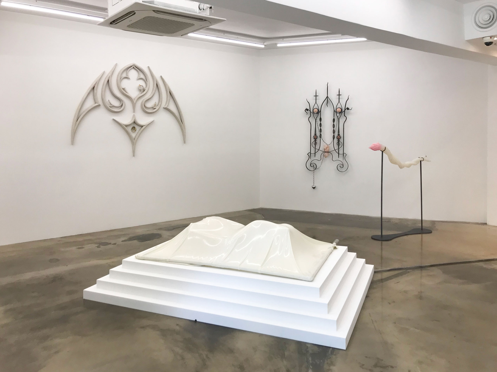
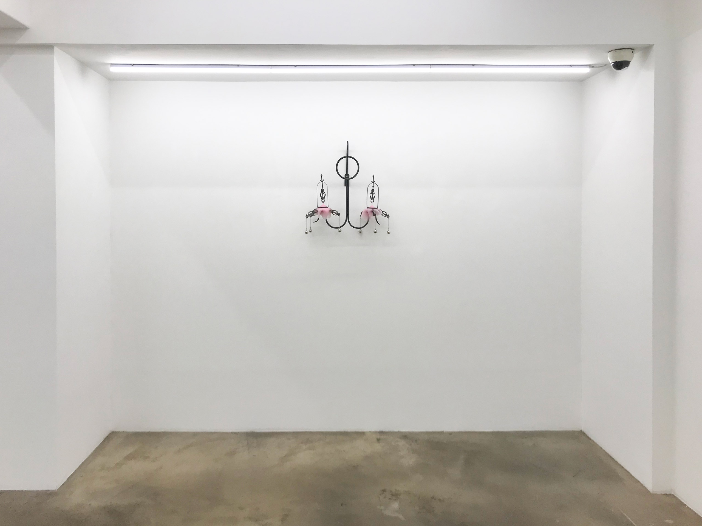
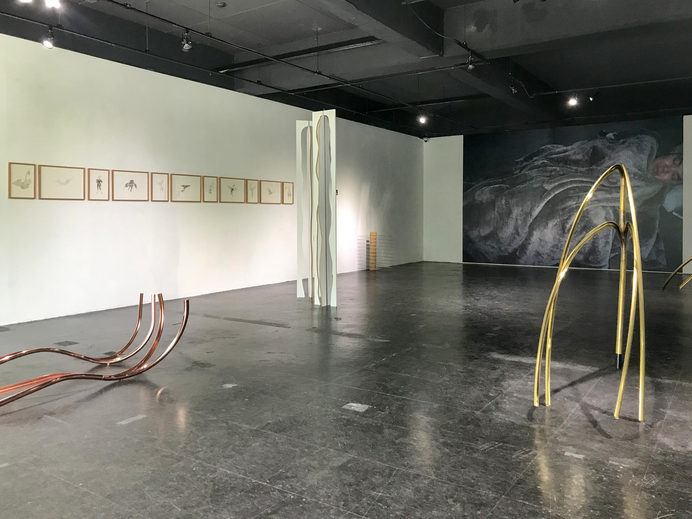
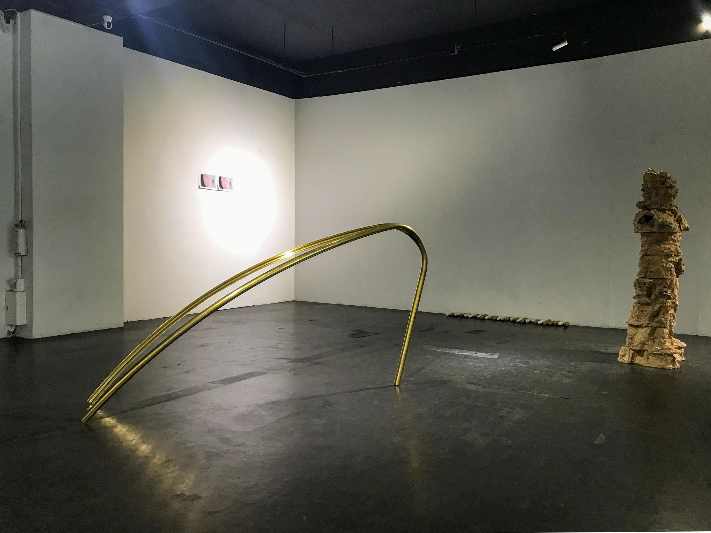
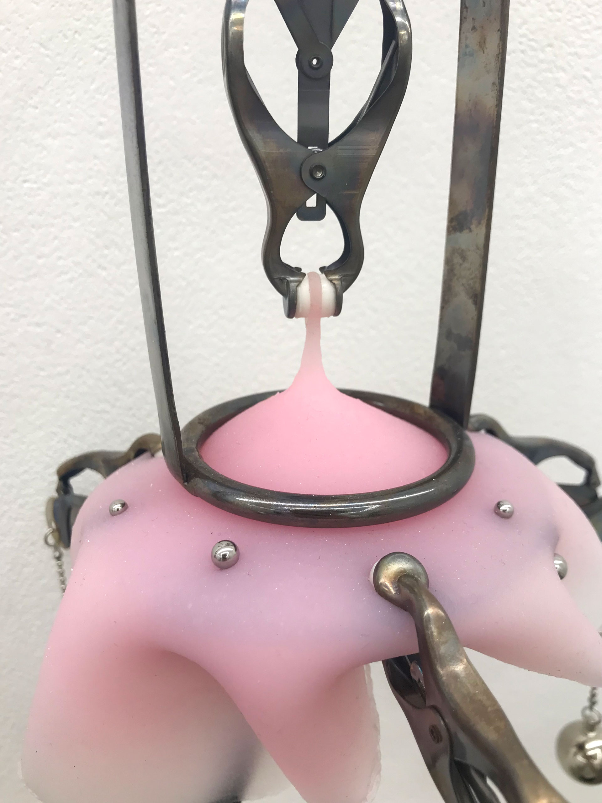
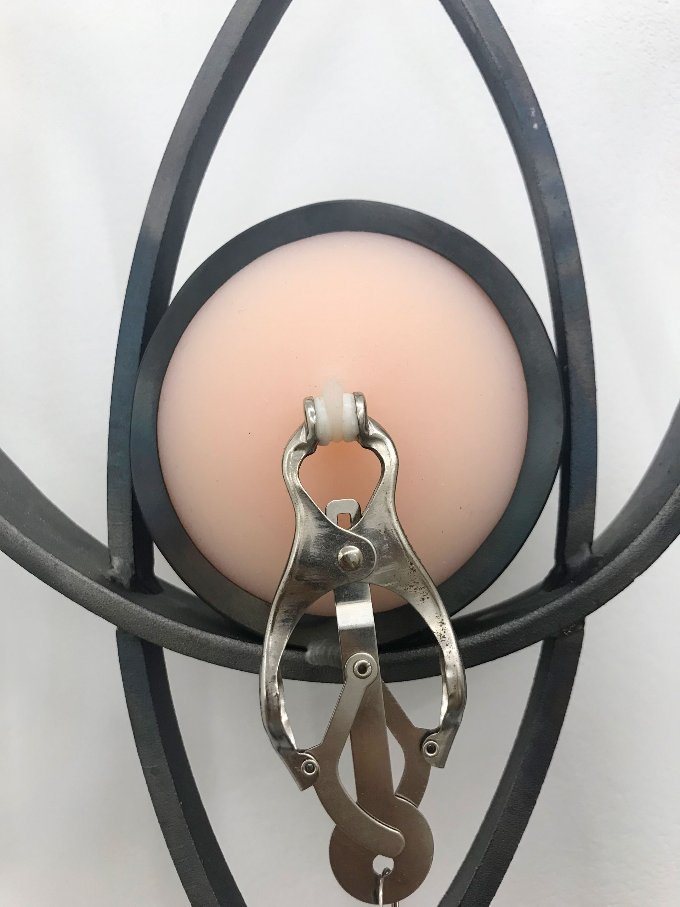
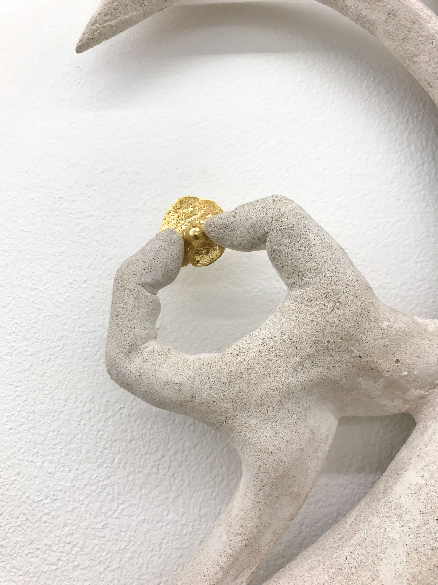
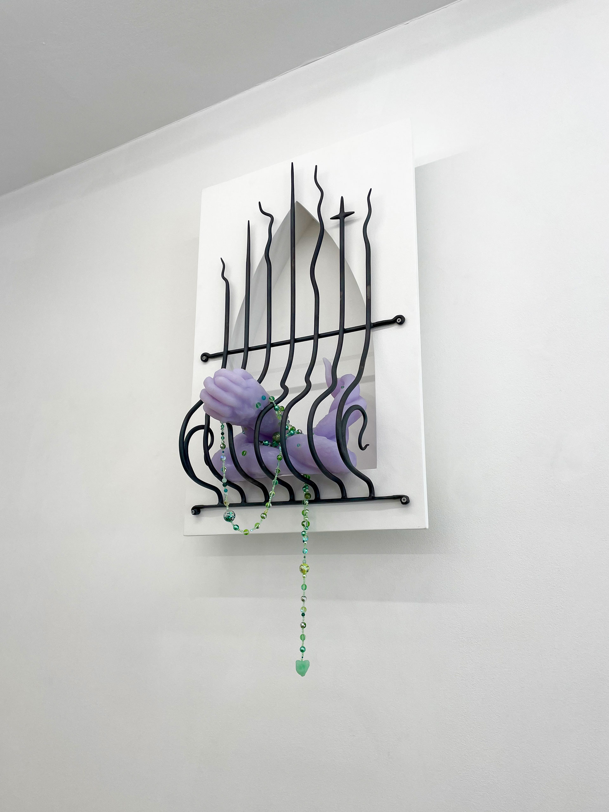

전시 보러 갈래? - 리타님과 함께 1
<1. 《말괄량이 길들이기》 전시/도록 후담 그 후…
2. 패거리와 패거리성에 대하여
3. 리타님의 글에 대하여
4. 정체성 / 서울 / 분노
5. 듀킴 개인전 《I Surrender》
.
.
.
.
.
.
.
.
.
.
.
.
.
.
.
.
.
.
.
.
.
.
.
.
.
.
.
.
.
.
재훈: 전시 어떻게 보셨나요?
리타: 재밌었습니다.
재훈: 음.. 네,,, 재밌었다... 리타님은 리플렛에 적힌 글을 먼저 읽으신 뒤 전시를 보신 건가요?
리타: 아 그렇죠. 네.
재훈: 아.. 전시 볼 때 리플렛을 먼저 보시는 편인가요? ... 그런데 지금 핸드폰으로 <전시 보러 갈래? w.정지돈> 은 왜 찾아보고 계신거죠? (웃음)
리타: 어떻게 대화를 했을까 싶어서요. 저번에 한 번 읽긴 했는데 자연스러워 보였거든요.
호성: 편집의 힘이죠.
재훈: 리타님을 이전에 행사 자리나 독서 모임에서 몇 번 봐왔지만 오늘 이 자리에서는 유독 어떻게 대해야 할지 모르겠고 난감하고 어색하고 그러네요...
리타: 저희가 이렇게 카페에서 대화를 하는 사이는 아니었으니까요. 그래서 더 어색하고 그런 거죠. 호성님도 저랑 구면이시고 시원님은 오늘 처음 뵀지만 왠지 본 것 같고 좀 익숙하네요?
시원: 저번에 미라주 갤러리에서 잠깐 마주쳤었는데 그때는 진짜 뵌 건 아니죠. 얘기를 나눴다든가 하지는 않았으니까요.
리타: 특히 재훈님이 엄청 어색해하시는 것 같은데.. 이걸 하시는 이유가 뭐예요? ‘전시 보러 갈래?’ 이 프로그램을 하시는 이유가 뭐죠?
재훈: 아까 말씀하셨다시피 저희가 어떤 행사나 글방 같은 자리에서 말을 주고받긴 하지만 이렇게 카페에 와서 대화를 하는 사이는 아니잖아요. 그런 덜 격식적인 대화를 평소에 궁금해했던 문화예술계 종사자와 함께 한다는 것이 소원이었어요.
시원: 그것도 그렇지만, 저는 리타님 블로그나 여기저기 기고하신 글들 읽으면서 리타라는 사람에 대한 궁금증이 있었어요. 리타님 글과 저를 동일시하는 부분이 많아서요. 그래서 글로만 만나던 사람을 실제로 만나면 느낌이 어떨까? 어떤 것들이 달라질까? 하고 그 막연하게 만남을 상상했는데 잘 안그려졌어요. 저는 그런 이유로 참여했습니다.
리타: 맞아요. 시원님은 제 글을 좋아하신데요.
시원: 네 맞아요. (웃음)
1. 《말괄량이 길들이기》 전시/도록 후담 그 후 …
재훈: 여기 모인 세 사람은 모두 리타님이 쓰신 글 혹은 소개해주신 글을 읽는 사람들이죠. 어떤 글을 읽는지는 다 다르겠지만.
그리고 더 중요한 이유가 생각이 났어요. 제가 리타님이 서울시립미술관에서 진행하신 세 차례의 라운드테이블 녹취록을 엄청 재미있고 유익하게 읽었거든요? 근데 그 이후에 패널로 참여하셨던 전시 《말괄량이 길들이기》 토크에서는 왜 앞서 언급한 라운드테이블에서만큼의 이야기가 나오지 않았을까? 혹은 그 정도로 터놓고 이야기한다는 기분이 들지 않았을까? 그 생각을 혼자 계속 했어요. 저는 페미니즘 미술이나 퀴어 미술에 대해 관심이 많은데 한국에서는 관련된 이야기를 나누는 자리가 흔하게 열리지는 않으니까요.


또 허호정 기획자가 토크 초반에 전시 《말괄량이 길들이기》가 같은 공간에서 열렸던 전시 《Bony》에게서 받은 감정적인 영향에 대해 짚고 넘어가신 바 있었고, 기획의 방점 중 하나가 현재 한국 사회의 소위 “페미니즘 리부트” 이후 현주소를 가늠해 보자는 것이었다고 다른 자리에서 말씀하셨거든요. 그런 기억들을 떠올렸던 저는 그 토크에서 다른 작가들, 다른 전시들 막 언급하고 의견 활발하게 주고받는 그림을 기대했던 거죠. 그런데 제 기대보다 그 자리가 조용했어 가지고, 패널분들도 관객분들도 하고 싶은 이야기가 많으실 텐데? 왜 이렇게 다들 조심스러워하시지? 이런 의문을 품다가 아, 재미있는 이야기는 모두 토크 자리 앞이나 뒤에서 하는 건가? 로 생각이 옮겨 갔어요.
그때 리타님에게 의아했었던 점은, 참여 작가들의 작품들로부터 작음의 미학을 읽어내려 하시는 한편 대빵 큰 작품 보고 싶다고 말씀하셨잖아요. 그랬을 때 왜 그 대목에서 이미래 작가 이야기는 하시지 않았는지 궁금했어요.
리타: 토크를 준비하면서 이미래 작가 얘기는 나오지 않았어요.
재훈: 아예 얘기를 안 하지는 않지 않았나요?
리타: 아예 얘기를 안 했어요. 그 자리는 《말괄량이 길들이기》라는 전시에 대해서 얘기하는 자리였고, 제가 어떤 작가에 비해서 다른 작가를 얘기하게 됐을 때 그 전시에만 초점을 맞추기가 어려워지지 않나요? 일단 저는 그 전시 보면서 이미래 작가 생각을 안 하기도 했어요.
재훈: 대빵 큰 작품 보고 싶다고 말씀하셨을 때 저는 참여 작가들과 비슷한 나이대의 여성 작가들 중에서 이미래 밖에 생각이 안 나서요.
리타: 많은 작가들이 프로덕션 규모만 갖춰지면 큰 작업을 해보고 싶어 해요. 프로덕션 규모가 갖춰지느냐 안 갖춰지느냐의 차이인 거지. 시원님도 큰 거 하고 싶어요, 작은 거 하고 싶어요?
시원: 아무래도 큰 작업을 하는 게 조건을 만들기 어려우니까, 해보고싶죠.
리타: 아무리 작은 작품을 만드는 작가여도 기회가 되면 한 번쯤은 큰 작품을 만들어 보고 싶어 해요. 그래서 이게 꼭 어떤 작가를 예시로 들어서 할 얘기라기보다도 저는 그 《말괄량이 길들이기》 전시에 참여했던 작가들도 분명히 기회가 갖춰지면, 더 큰 공간이나 더 큰 프로덕션 규모가 주어지면 분명히 큰 걸 한 번쯤 해보고 싶어 할 거라고 생각이 되거든요. 근데 거기서 이미래 작가 얘기를 하면 뭔가 비교하는 것처럼 되지 않아요?
재훈: 근데 참여 작가들에게서 ‘작음’이라는 미학적인 공통점을 발견할 수 있다고 했을 때 어떻게 이미래는 이례적인 사례가 될 수 있었는지를 이야기할 수 있지 않았었나? 그때 저는 그렇게 생각을 했었어요.
리타: 그런가?
시원: 근데 저 질문드리고 싶은 게 그 전시에서 작음의 미학이라는 게 어떤 맥락으로 나온거에요?
리타: 그 전시에 출품된 몇몇 작품들이 굉장히 작았어요. 실제로 장도은 작가의 작업이 되게 작았거든요. 김솔이 작가의 작업도 작았고. 그리고 한솔 작가 작업도 어떻게 보면 조금 소박한 형식이었어요. 전시 못 보셨나요? 혹시 보셨죠?
시원: 네네, 작품들 기억이 나네요.
리타: 어떻게 보면 오늘 본 듀킴 작가의 작업도 되게 얇고 작았잖아요. 이러한 경향성에 대한 이야기를 하다가 작가들이 자기가 물리적으로 옮길 수 있는 크기의 작품을 제작하는 이유 등에 대해 이야기를 했었거든요. 작가의 몸이 작을 수도 있고, 작업실 규모가 작을 수도 있고, 그러한 재료를 선호하는 걸 수도 있고 여러 가지 이유가 있는데 그냥 그런 이야기를 나누면서, 제가 그걸 좀 긍정적인 방향으로 이야기를 했던 것 같아요. 작음의 미학이라는 단어를 제가 썼는지는 기억이 나지 않고요. 동시에 또 어떤 분께서는 질문하시기를 그럴 거면 아예 작게 만들든지, 《말괄량이 길들이기》에 출품된 작품들은 애매하게 작지 않느냐 작음의 미학을 얘기하기에는 굉장히 애매하게 작지 않느냐 그런 이야기를 하기도 하셨어요.
시원: 그 작음의 미학이라는 게 굉장히 크고 작은 크기를 지칭하는 것 뿐만 아니라, 만들 때 동반되는 여성 몸의 수행까지 포함해 말하는 거군요.
리타: 그것들도 포함되어 있고요. 작품들에 손으로 만드는 것 같은, 손의 흔적이 굉장히 많이 묻어 있었어요. 우리가 카페에 오면 이런 휴지 같은 거 막 만지잖아요? 이런 식의 일상적이고 소박한 손노동에 대한 이야기일 수도 있고, 장난스러운 손노동에 대한 이야기일 수도 있죠. 또 한솔 작가 같은 경우에는 키치하게 노래방, 가라오케 형식을 사용해서 뮤직비디오 같은 영상 작업을 제작했는데 거기서 발견할 수 있는 어떤 날것 또는 아마추어적인 방법론들이 이 작가들의 존재론적인 체험과 연결되어 있지 않느냐 그런 이야기를 하려고 제가 이야기를 꺼낸 것 같아요.
큰 작품을 보고 싶다는 이야기는 어떤 거였냐면, 우리가 여성 작가들에 대해 이야기할 때 손노동에 대한 이야기를 많이들 한단 말이에요. 작고, 손노동적이고, 가내 수공업적이다와 같은 이야기를 많이 하는데 이것에 반대되는 크기의 작품도 보고 싶다는 거죠. 여성 작가들의 정체성이나 그들의 존재 방식을 그 작음에 귀속시켜버릴 위험이 있으니까요. 작으니까 여성적이다. 이렇게 말해버릴 위험이 있잖아요.
그러니까 지금 나는 상상할 수 없지만 무언가 다르고, 많고, 다양한 방식으로 실험하는 작가들도 보고 싶다. 그런 작가들이 아니더라도 아까 언급한 작가들 역시 여건만 주어진다면 큰 걸 만들 가능성이 얼마든지 있고요. 설득이 될까요?
재훈: 네. 그때 했던 오해나 기분은 사라졌어요. 이제 이렇게 만나서 이야기를 하면 오해가 사라지잖아요? 공적인 자리에서 분위기상 꺼내지 못했던 화제를 전시 보러 가자고 유혹하면서 꺼내보는 거죠.
리타: 아~
재훈: 근데 이제 안 만나면 혼자 안 좋은 생각들을 계속 하는 거에요. 왜 다 나만 빼고 이야기하지? 하는 나쁜 생각들이 드는 거죠.
2. 패거리와 패거리성에 대하여
리타: 이게 참 문제죠.
시원: 그게 어떤.. 어떤 부분의 문제일까요?
리타: 기본적으로 미술계가, 미술계라고 하는 게 있다면 패거리처럼 작동하는 것 같지 않아요? 일반 대중, 미술 관객이라고 부를 만한 혹은 거기에 발을 걸치려고 하고 있는 그 단계의 사람들에게는 뭔가 공개하지 않는 자기들끼리의 네트워크나 담합이 있을 것처럼 보이게 만들잖아요. 이게 진짜 문제죠. 어떻게 그렇게 안 하지?
호성: 역사적으로 그렇게 작동하지 않았던 경우가 있나요?
리타: 뭐 노력은 할 수 있겠죠.
호성: 생각해보면 어떤 공동체나 담론이 위태로워질수록 나타나는 전략이 안에서 카르텔을 만들면서 외부에서 접근 못하는 정보들을 만들고, 그걸로 정당성을 계속 유지를 하는 것 같아요. 미술계의 위태로움의 증상으로서 패거리가 나오는게 아닐까 생각이 드네요. 퀴어에 대한 이론적 담론 상당수가 백인 게이 남성 위주로 돌아간다는 면에서 인문학계도 비슷한 것 같고요.
리타: 맞아요. 음... 근데 그렇게 치면 위태롭지 않았던 적이 한 번도 없었던 것 같아요. 그런 패거리들이 계속해서 우리에게 등장해 왔다는 점에서는. 한편으로 저 사람들끼리만 알고 있는 게 분명히 있을 거라고 생각하는 건 그렇게 읽는 사람의 편집증적인 읽기일 수도 있죠. 그런데 사실 그 의심을 떨치기가 힘들어요. 활동하는 사람들은 항상 비슷한 사람들끼리 다니니까요. 저 사람들끼리 뭐 아나? 자기들끼리 뭐 아나? 이렇게 상상될 수밖에 없어.
호성: 그런 맥락에서는 《I Surrender》랑 《Bench Side》가 전혀 다른 형태의 패거리를 보여주는 것 같아요. 《Bench Side》 같은 경우는 다른 작가들의 작품을 한 공간에 배치해 뒀다는 맥락에서 이 작품은 왜 여기에 배치했지? 협업은 어떤 방식으로 이루어진 걸까? 같은 내용이 궁금했거든요. 근데 《I Surrender》 같은 경우는 화이트 큐브에 전시된 작품들이 각자 독단적으로 존재하는 것 같았고, 보고 있는 작품 이외에 그 작품과 다른 작품들과의 배치나 관계성이 궁금하지는 않았어요. 《Bench Side》가 여러 작품들이 상호작용하며 숨쉬는 공간이라면, 《I Surrender》는 진공상태 같았다고 할까요?
   
전시 외적으로 확장해 봤을 때 《I Surrender》는 큰 길 바로 옆에 있고 하얀색의 깨끗한 공간이었던 반면에 《Bench Side》는 쓰레기더미가 쌓여있는 골목과 미로 같은 상가들 사이에 위치해 있었던 부분도 관련이 있다고 생각해요. 접근성이 좋았던 전자에 비해 후자는 전시장을 찾아가는 과정 자체가 전시를 본 감각에 영향을 줘서 작품 사이의 공간적 관계성에 더 민감했던 거죠.
재훈: 《I Surrender》에서의 패거리성이란 어떤 걸 말씀하신 건가요?
호성: 패거리성이 보이지 않는다는 건 그냥 그 작품만 딱 보이게 전시해놨구나, 이 작품만 가지고 생각을 해도 되겠다 라는 인상이 들었다는 의미였어요. 근데 《Bench Side》 같은 경우는 보고 있는 작품을 넘어서 다른 작품들과의 관계가 어떻게 돼 있고 이 관계들이 구도가 왜 이렇게 되어 있고 등등 이런 것들이 궁금한거죠. 이 질문에 답하기 위해선 작가님들이 어떻게 생각했는지 알아야 되니까 거기서는 보이지 않는 배치나 상호 협의의 과정이 궁금하게 느껴지는 거고요.
재훈: 근데 《I Surrender》 같은 경우는 개인전이라 당연히 작품만 볼 수밖에 없지 않나? 하는 생각이 드네요.
호성: 근데 개인전/단체전 구분으로만 보기에는 두 전시의 주제에도 차이가 있다고 생각해요. 《Bench Side》의 주제 중 하나가 공간성이잖아요. 중앙에는 필드가, 그 주변에는 벤치가 있고 그 사이의 시선들이 관계적으로 교차하는 역학에 대해 말하는 《Bench Side》와 달리, 《I Surrender》 같은 경우는 작품들한테서 찌르고 넣고 꼬집는다는 느낌을 주로 받았어요. 이런 주제는 《Bench Side》와는 반대로 다른 것들과 관계하지 않고 자신의 욕망을 타협 없이 관철시키는, 굉장히 날카롭게 보이는 것들에 대한 것이라고 생각했어요. 얘네는 애초에 독단적으로 존재하기 위해 만들어진 작품인 것 같았고, 《Bench Side》처럼 서로 연결되는 방식으로 공간 속에 있었다고 보기에는 힘들지 않나.
시원: 패거리성이 어떤 것끼리 모였을 때 생기는 효과라고 생각해본다면 개인전/단체전 형식의 차이도 있겠지만.. 작품끼리 연결되는 방식도 좀 달랐던 것 같아요. 예를 들어 듀킴의 《I Surrender》 공간이 자신이 설정한 무엇을 위해 굉장한 목적의식으로 거기까지 뛰어나가는 움직임이라면, 《Bench Side》의 공간은 한 작업 옆에 다른 작업. 이렇게 시선이 흐르는 방식으로 이야기하는 것 같았어요. 한 물체와 다른 물체, 다른 물체 옆 물체들, 그리고 그 물체들로 이루어진 풍경... 보는 사람마다 다르니 무한히 조합될 수 있겠구요. 이런 식으로 사물에서 사물로 시선이 혹은 나의 몸체가 섞이는 과정 속 상시적 수정 같은 게 있었던 것 같아요. 그런 의미에서 공간이 좀 더 분산적인 것 같네요.
그리고 ‘계’라고 상정된 패거리성에 대해서 얘기를 하자면, 사실 그들끼리의 어떤 은밀한 대화가 있을 거라고 상상하면 가끔 숨이 턱 막히거든요. 필연적으로 발생하는 무리에 내가 끼지 못한다는 아쉬움과 좌절감 같은 것? 그건 분명히 있는 부정적 감정인 것 같아요. 이걸 없는 셈 치면 가끔은 더 독이 되는 것 같고... 보통 그렇게 느낄 때 그런 답답함의 대상은 자신이 하고 싶은 것과 매우 밀접한 것일 테고, 그 질투의 이유는 자신도 무언가를 잘 해내고 싶기 때문이겠죠. 자신에게 중요한 것을 잘 전달하고 싶은 마음 같은 거요.
그런데 생계가 보장되기 어려운 예술 활동 안에서 작가들이 이 작업을 적정 시기 내에 해야 한다는 조급함도 많이 생기는 것 같고, 그 어려움에서 생기는 아까 말씀하신 편집증 같은 정신질환과도 관련이 있지 않나 싶어요.
리타: 그러니까 이 ‘패거리성’이라는 게 갑자기 생긴 단어죠? 지금 이 자리에서 갑자기 생긴 단어죠? 아니, 패거리가 나쁜가?
호성: 저희도 패거리 아니에요?
리타: 그러니까요. 지금 밖에서 보면 이것도 다 패거리로 보여. 밖에서 보면 저희 네 명 갑자기 죽마고우 되는 거예요. 패거리 자체가 나쁜 게 아니라 패거리가 생산하는 효과들이 어떤 방식으로 작동하는지가 더 중요하다고 생각이 드는데요. 물론 패거리들은 항상 미스터리한 분위기를 풍기기 때문에 우리가 그것을 알지 못할 때 매우 안타까운 마음이 들지만 그것은 님들의 가족들에 대해서 내가 느끼는 감정과 비슷할 수도 있죠. '저 사람은 가족이 있대. 정말 부럽다. 집에서 어떤 이야기들을 할까?' 이렇게 생각 안 하지만 예를 들자면 그렇다는 건데, 타인이 향유하는 것들에 대한 이런 질투, 뭘 향유하는지는 모르겠지만 그것 자체를 '향유할 수 있음'이라는 능력에 대한 질투는 인간 근원적인 것 아닌가요? 그건 어쩔 수 없는 거죠. 근데 예를 들어서 패거리들이 뭔가를 독식하고 있어, 그래서 상황을 악화시키고 있어라고 판단될 때는 우리가 어떤 방식으로 대항하거나 반응할 수 있게 되는 거죠. 지금 미술 활동하는 사람들 중에서 그런 패거리가 눈에 보이시나요?
재훈: 아니요. 보이지 않습니다.
리타: 예를 들면 누군가는 저번 회차에 나왔던 정지돈 작가나 금정연 서평가와 같은 분들이 다 같이 글을 생산하는 것처럼 보이게끔 하는 활동 방식을 두고 패거리짓이라고 얘기할 수도 있잖아요. 문학계에서는. 근데 그게 뭐 엄청 큰 뭐 그런 건가? 예를 들어서 그 사람들이 패거리로 몰려다니면서 올해의 문학상을 결정하고 그러면 문제일 수 있겠죠.
재훈: 금품 갈취하고 그러진 않죠.
리타: 네, 그러면 문제죠. 문제일 수 있죠.
호성: 이론적으로 유명한 패거리성의 예시로 유대인이 갑자기 생각나네요.
리타: 그렇죠.
호성: 이런 맥락에선 패거리와 정체성이 긴밀히 연관되어있다는 느낌이 들어요.
리타: 정체성 자체가 그냥 패거리성을 만들어 내잖아요. 넓은 의미에서는 지금 퀴어나 페미니즘과 같은 키워드를 달고나오는 전시들 자체가 모두 패거리죠. 거기서 어떤 종류의 유리함을 점하고자 하는 경우일 수도 있고, 아니면 그냥 범주를 만들려고 하는 작업일 수도 있는데, 최근에 그런 전시들에 대한 반감들도 꽤 있다고 생각하거든요? 근데 이게 어쩔 수 없다고 퉁치는 것처럼 유들유들하게 뭉치고 넘어가려는 게 아니라, 저는 패거리가 무언가를 얘기할 때 필수적인 전제이자 기본 단위일 수도 있겠다는 생각이 들어요.
호성: 여러 사람이 모여서 패거리를 형성할 수 있지만 또 반대로 한 사람이 패거리가 될 수도 있죠. 제가 생각하고 있는 건 아픈 여자 이론으로 유명해진 요한나 헤드바가 "In Defense of De-Persons"라는 글에서 말하는 게 개인이라고 해도 정체성이 여러 개로 파편이 나면 여기서 얘기하는 패거리처럼 그들만의 리그를 생겨나게 하는 효과가 있다 라는 건데, 사실 이건 문학적이고 개인적인 예시인 것 같네요. 실제로 지금 얘기하고 있는 예술과 기관의 맥락에서 생긴 사례가 있는지 궁금해요.
시원: 그게 가능한 형태로 예시가 있을 수 있나요?
리타: 되게 뜬금없는 예시가 생각이 나네요. (웃음) 어떤 동인계에서, 그러니까 만화를 2차 창작하는 일군의 오타쿠들을 동인계라고 부르는데요. 이 사람들이 가끔 굉장히 마이너한 커플링을 팔 때 한 사람이 여러 닉네임으로 동시에 활동해요. 그러면 갑자기 세가 늘어난 것처럼 보이거든요. 실제로 너무 마이너한 커플링을 파는 사람이 한 명밖에 없는데 그 사람이 5개의 닉네임으로 활동하고 그걸로 앤솔로지를 낸 적이 있어요.
시원: 각자 다른 사람들이 모인 것처럼요? (웃음)
리타: 네, 마치 앤솔로지를 낼 만큼 동인계에서 이 커플링의 입지가 대단하다 라고 얘기해 주는 것처럼요. 실제로 이런 예시가 있기도 하고, 물론 이걸 비밀스럽게 말하지 않고 앤솔로지를 낼 수도 있고 아니면 처음부터 이 사실을 폭로하는 방식으로 낼 수도 있는데, 어쨌든 그게 하나의 예시가 되지 않을까? 혼자서 세를 늘려 몸집을 키우는 방법들 중 하나의 예시이지 않을까? 실제로 뭔 효과가 있는지는 모르겠지만..
재훈: 제가 왜 패거리들에 억하지심을 느꼈는지는 개인적으로 생각해봐야 할 것 같아요.
3. 리타님의 글에 대하여
리타: 재훈님은 저를 그렇게 좋아하지는 않는데 약간 인정은 하는 느낌이에요. 항상 만날 때마다 저에게 무언가를 따져 묻고 싶은 게 있는데 그걸 참고 있는 느낌? 시원님은 저를 좋아하는 게 맞는 것 같아요. 그리고 저는 호성님에게도 우호적인 감정을 느껴요. 근데 이제 재훈님은 항상 “이 사람은 나를 좋아하는 건가? 싫어하는 건가?” 싶어요. 그런데 또 항상 행사 같은 걸 하면 오거든? 근데 막 애매한.. 애매한... 이거에 대한 해명부터 해주시죠.
재훈: 좋아하니까, 그리고 리타님이 생산하신 것들이 저의 무언가를 매번 건드리니까 가는 거에요.
리타: 항상 뭘 따져묻고 싶어 하는 것 같아요.
재훈: 항상 뭘 따지고 반박하고 싶은 마음이 들죠. 음.. 예를 들면 저번에 저희 셋이 같이 성별 정체성에 대해서 이야기를 했거든요? 그러다가 리타님이 진행하시는 팟캐스트 <퀴어 방송>에 대한 인터뷰 기사를 읽다가 그런 부분을 발견했어요.
방송 초기에는 그냥 게이, 그냥 레즈비언, 그냥 바이섹슈얼을 게스트로 섭외하는 것보다는 인터섹스 바이섹슈얼 그리고 비수술 트랜스젠더 레즈비언처럼 조금 더 복합적인 젠더 정체성으로 본인을 주장하는 사람들을 게스트로 모시고 싶었다. 그렇게 말씀하셨는데, 저는 그 ‘비수술 트랜스젠더 레즈비언’이라는 단어 3개의 조합을 본 순간 그런 게 가능하다. 그런 게 상상 가능하다. 내 자리가 그 곳일 수도 있겠다는 어떤 존재론적 이민의 가능성을 리타님이 쓰신 글들을 통해서 보는 거죠. 그렇게 스스로 강한 폭발 같은 걸 한 다음에 이 마음이 도대체 무엇인지는 모르겠지만 일단 리타님의 행사장으로 가는 것 같아요. 그 행사의 취지는 저에게 그렇게 중요하지 않고 그저 거기서 그 폭발에 대해 따져물으려는... 네. 혹시 답변이 조금 됐을까요?
리타: 아니요? 전혀 안 됐어요. (웃음)
호성: 그때 저희가 처음에 나눴던 이야기 중에 하나가 서로 리타 님을 어떻게 접했는지였는데요. 말씀하신 대로 리타 님을 통해서 각성을 한 계기도 있고, 시원님 같은 경우 리타님의 글을 좋아한다는 감정이었고 저는 퀴어 이론을 혼자 집에서 읽다가 한국에서 이렇게 네트워킹을 만든 사람이 있구나 하고 느꼈다는 이야기를 한 적이 있어요. 서로 다르게 접해서 재밌었던 기억이 납니다.
재훈: 많은 사람들이 영향을 받고 있을 거라고 생각하는 바입니다.
호성: 뭐 누가 많은 사람의 영향을 받고 있다는 거예요?
재훈: 리타님이 글을 통해 소개하는 혹은 만들어주는 자리에 내가 속할 수 있을 거라고 기대하는 사람들이 생각보다 많을 것이다.
리타: 그렇죠. 그럼 뭐 잘 된 거 아닌가?
재훈: 네.
리타: 아니, 잘 됐다기보다는 유감이에요. 유감이지.
재훈: 너무 쉽게 되서 유감이라는 건가요?
리타: 아니 아니 그냥 살 수도 있었는데, 자극을 받았다니 유감이다. 그냥 안 보고 살 수도 있었는데.
4. 정체성 / 서울 / 분노
시원: 그거에 관해서... 자신의 정체성을 어떤 식으로 언어화하고 이름을 붙여볼 수 있는지에 대해 저희가 어제 이야기를 했었거든요. 그때 이야기를 하다 비유적 표현으로 두가지가 나왔는데, 정체성이라는 옷이 불편할 때 그것을 헐렁하게 입던지 혹은 옷을 갈아입던지 이 둘이었어요.
옷을 헐렁하게 입는 건 기존의 이성애 규범적 체계에서 자신에게 부여된 정체성을 가지되, 그 정체성을 능동적으로 긍정하거나 받아들이지 않고, 다른 이름의 정체성을 선택하지도 않는 것이었어요. 최대한 정체성, 특히 성 정체성에 부여된 과도한 무게를 덜려고 하는거죠. 자신의 정체성에 거리를 두는 아이러니적 태도나 확신의 유보와 같이 다른 정체성을 선택하는 게 아니라 이미 주어진 정체성을 그냥 둔 채로 이런저런 시도를 해보는 거에요. 옷이 불편하지만 다른 옷을 입을 시간이나 에너지가 없어 차라리 닳을 때까지 입는 것이나, 이리저리 늘려보고 최대한 편하게 만드는, 어떤 옷을 입고 있다는 사실 자체를 신경쓰지 않으려고 하는 것처럼요.
옷을 갈아입는 건 자신에게 맞다고 느껴지는 정체성을 찾거나 만드는 선택지를 뜻해요. 예를 들어 자신을 이성애자 남자라고 생각했는데 남자를 좋아하게 되어서 게이라고 정체화하는 것이나, 시스젠더 남성에서 다른 젠더로 정체화하는 것처럼요.
물론 이렇게 이분법적으로 나누면 이야기를 하는데 한계가 있지만 저희가 초점을 맞췄던 부분이 정체성을 선택하는 방법들에 대한 것이어서 옷에 비유했었어요. 정체성이라는 것이 명확한 인상을 위해 결정했어야만 하는 입장권처럼 보일 때가 있잖아요. 이미 있는 언어로는 설명이 안되는 부분들이 있음에도 불구하고요. 이게 비유적 표현이라 각자에게 받아들여지는 의미도 조금씩 다를 것 같은데, 리타님은 개인이 그 '정체성'이란 걸 어떻게 받아들일 수 있는지에 대해 궁금해요.
리타: 안 하고 살 수 있으면 안 하고 사는 거고 필요하면 하는 건데, 정체성을 옷에 비유하면 여러 문제들이 생기는 것 같아요. 옷을 사야 되잖아요, 일단. 옷이 여러 개 있으려면 돈이 있어야 되고요. 저 사람이 가진 옷 엄청 좋아 보인다. 나도 저렇게 여러 옷이 갖고 싶지만 저 옷이 엄청 비싸. 저 이름에 들어가려면 여러 개를 해야 되는 것 같아. 이랬을 때 정체성 정치라고 하는 게 비판받는 이유 중에 하나가 그게 굉장히 선택 가능한 것처럼, 고를 수 있는 것처럼, 자유가 무한한 것처럼 우리에게 제시되기 때문인 거잖아요. 거기에는 이미 여러 가지 조건들이 포함되어 있는 건데 말이에요. 그럼에도 불구하고, 예를 들면 엄청 불가능한 예시지만 언어가 하나도 없는, 자기 언어를 만들기 되게 힘든 공간. 어디를 상상할까요? 서울은 아닌 것 같아요. 자기 언어를 발명하기 정말 힘든 어떤 공간에 이 사람이 퀴어라는 단어를 처음 봤을 때, 자기가 자기를 뚫고 나와야지 그 단어를 가질 수 있는 거잖아요. 왜냐면은 그냥 자동적으로 주어지는 게 아니니까. 너도 퀴어 나도 퀴어 우리 모두 퀴어인 그런 동네에 살지 않으니까. 그렇다면 이제 혼자서 뚫고 나와야 될 텐데 그때 그 사람이 치러야 할 비용이 꽤 많을 수도 있다는 거죠. 그러니까 정체성의 문제는 물론 선택이지만 비용의 문제이기도 한 것 같아요, 제가 느끼기로는.
저도 여기 살고 있으면서 느끼는 건데 서울은 일단 여기서 태어나기만 해도, 그러니까 여기 거주하기만 해도 정말 많은 것들이 자동적으로 주어지는 곳인 것 같아요. 제가 최근 들어 서울 사람들에 대한 환멸을 굉장히 자주 느끼고 있는데.
재훈: 왜 최근에 자주 느끼시는 거예요?
리타: 제가 목요일마다 학교를 가거든요. 그래서 그래요. 학교에 가면 학교 사람들이 싫거든요. 학교 사람들이 막 뺀질하게 입고, 웃으면서 돌아다니거든요. 그거를 보고 있으면 엄청 화가 나요. 그러다 보면 일주일에 한 번은 학교 사람들, 특히 서울 사람들에 대한 환멸이 올라오는 거죠.
호성: 향유에 대한 질투. 방금 얘기한 그런 건가요?
리타: 네 그렇죠. 근원적으로는 그런데, 저는 그걸 계급적 분노라고 할래요. 분노가 엄청 있어요.
호성: 웃고 있는 표정과 몸짓에서 계급을 읽어낼 수 있는 건가요?
리타: 통계적으로 80% 이상이 중위 소득 이상이라고요.
재훈: 그 사람들이 나쁜 패거리처럼 보이겠네요.
호성: 그 사람들은 패거리가 없어도 되는 사람들인 거죠.
5. 듀킴 개인전 《I Surrender》
재훈: 정체성을 옷으로 비유했을 때 그것을 우선 구매해야 된다는 문제가 생긴다는 리타님의 말씀에 대해, 저는 그 옷을 사는 데 필요한 비용 중 하나가 ‘경험’이라고 생각해요. 이 경험을 미술이나 페미니즘에서는 수행이라고도 부르는 것 같고요.
저는 이번에 《I Surrender》에 출품된 작품들을 작가 본인의 경험과 연결 짓는 방식으로 감상했었어요. 전시장에 비치된 책을 보면 작가 본인의 SM 플레이 경험을 회고하는 내용이 나오거든요. 파트너가 자신의 눈을 가리고 자동차 트렁크에 싣고 가는 방식으로 플레이를 했다는 그 일지를 본 뒤에 전시장 중앙에 있던 하얀색 작품을 보니까 작가 본인이 트렁크에 있었을 때 느꼈던 감각이 확 느껴지더라고요. 그런 경험을 했다는 사실을 읽기 전과 후의 작품에 대한 감상이 달랐는데요.
  
마찬가지로 젖꼭지가 기구로 얼마나 조여졌는지를 보다가 이 상태를 계속 유지하려면 얼마나 아플까? 하고 생각하게 됐어요. 그런 경험들을 통해서 작품의 손가락 각도 디테일 등이 나오는 것 같고요. 정리해 보자면 최초에 작가의 경험이 있고 그 경험에 대해서 본인이 이게 무엇이었는지 다시 떠올려 보는 시간이 있고 그걸 마조히스트라는 정체성으로 수렴한 뒤에 작품으로 만들고 그걸 발표까지 했잖아요. 이 상태, 이 레벨? 여기까지 작업해서 나한테 들이미는 그 일련의 과정까지 생각해 봤을 때 이번 전시를 보면서 되게 자기한테 알맞는 옷을 딱 입고서 나 봐봐! 하고 들이밀어진다는 느낌을 받았어요.
시원: 저는 어떻게 듀킴 작업을 느꼈냐면, 저는 전시로는 처음 보거든요. 그 전에 휴대폰 사진으로 봤을 때는 어떤 당황스러움 같은 것들이 있었어요. 그런데 지금 와서 강하게 드는 생각은 그 당황스러움은 함정일 수 있겠다 라고 생각이 들었어요. 그래서 전시를 중심으로 말해보면 제목에서부터 ‘항복하고 있다.’라고 하잖아요.
그리고 그 공간의 중심에서 어떻게 보면 가장 사적이라 남들에게 보여주기 힘든 곳이고, 더럽고 취약한 곳인 똥꾸멍을 보여주는 것은 SM플레이에서 생각해 보면 마조의 역할로, 이분법적으로 말하면 받는 사람의 입장에 있는 건데, 근데 그것을 그냥 딱 열어 보이는 게 당황스럽다가도 그게 공격처럼 느껴지기도 했어요. 그게 아까 재훈님이 말씀하신 밀어붙여진다라는 생각과 비슷 부분이었던 것 같아요. 철창 형태도 철 자체의 딱딱함에 끝이 곡선으로 휘어져 변형이 있었는데, 플레이 도구나 자위도구 같기도 하고, 그게 덩어리처럼 보이는 신체와 합쳐져서 듀킴 작업에서만 볼 수 있는 유희적인 섹슈얼리티가 있었던 것 같아요.

듀킴 작업에서는 수치심과 공격성이 동시에 드러나는 것 같은데요. 복종에서 오는 수치심, 혹은 취약한 것을 드러낼 때의 수치심같은 것들? 그 취약한 것은 듀킴 작가가 전략적으로 배치한 부분이라 공격성이 느껴졌던 것 같고..
제 사적인 공간에서 SNS를 통해 듀킴 작업을 마주쳤을 때 느꼈던 당황스러움은 아마 이런 수치심을 듀킴이 ‘부캐’에 포장해 발사하는 것과 관련이 있지 않았을까? 라고 생각도 드네요, 일민 미술관에서 2020년도에 진행했던 전시 Ghost Coming에서 일민 미술관 인스타를 일시적으로 점유해서 피드를 활용하는 작업을 하셨었는데, 그게 꽤 힘이 있었는지 그 뒤로도 가끔 생각날 때가 있었어요.
재훈: 하얀색 설치 작품에서 저는 엉덩이랑 손까지는 봤는데 항문까지는 생각하지 못 했거든요? 근데 그렇게 말씀해 주시니까 다르게 느껴지네요.
시원: 어떤 식으로 다르게요?
재훈: 아까 말한 대로 확 들이미는 것처럼요.
리타: 이건 듀킴 작가가 계속 하던 이야기라, 저는 이거를 두 번째 봐요. 재훈님이 읽으셨다는 그 텍스트는 다른 작업으로도 시연을 했었어요. 한 번은 신촌 극장에서였고 또 한 번은 공간 이름이 생각 안 난다. 여튼 그 전시 공간에 실제 자동차를 가져다 놓고, 관객을 밀실에 넣어놓은 다음에 듀킴 작가가 아까 말씀하신 그 텍스트를 읽어주는 방식의 퍼포먼스를 한번 했었어요. 그래서 저는 이번 작업도 이전 작업들의 연장선상에서 이해를 했고, 그렇기 때문에 완성도나 마감, 재료 위주로 전시 자체의 만듦새를 조금 더 보려고 했어요.
제가 궁금했던 건 작업의 재료들을 캡션에 완전하게 다 써놓지 않았다는 점? 판매 때문인지 모르겠지만 작업의 크기는 inch 단위로, cm 단위로 굉장히 구체적으로 표기돼 있더라고요. 그런데 피어싱이라든지 SM 도구들 같은 기성품으로 보이는 재료들은 명시되어 있지 않아서 그 이유가 좀 궁금했어요. 어째서 캡션을 온전히 표기하지 않는 방식으로 썼을까, 어떤 이유로 이런 선택을 하게 됐을까 이런 게 궁금했어요.
재훈: 듣고 보니까 의미심장하네요.
호성: 저는 전시를 보며 세련됐다라고 느꼈던 것 같아요. 작품들을 통해 정복과 항복이 권력의 구조 속에서 서로 뒤집고 뒤집히는 역학을 형태적으로 잘 뽑아냈다는 인상을 강하게 받아서 그런 것 같아요. 자신의 욕망을 정말 잘 알고 있는 느낌?
옷이라고 생각하면 옷을 입은 몸은 없고 그냥 옷만 있는 거죠. 실제 작품들도 몸 전체보다는 손가락과 같은 몸의 부분들만 부각시키고 있고요. 이렇게 원하는 부분만 보여주고 불필요한 부분들을 빼 버리면서 말 그대로 감상을 할 수 있게 해주죠. 조금 전에 리타님이 말씀하신 잘 사는 것 같아 보이는 사람들의 웃음에서 그 웃음만 가져오는? 그렇기 때문에 계급적인 분노로 이어지지 않고 그 웃음 자체를 감상할 수 있게 만드는거죠. 항복과 연결되는 계층적 요소와 같은 불편한 것들은 싹 다 빼고 딱 항복 자체만 볼 수 있게 하는...
재훈: 와, 방금 호성님 설명 너무 좋았다. 저는 듀킴 작가가 자동차 트렁크에서의 경험을 다른 작품으로 두 번 더 선보였는지는 몰랐어요.
시원: 자기가 쓴 글을 낭독하는 퍼포먼스였나요?
리타: 낭독은 듀킴 작가의 (녹음된) 목소리가 송출되는 방식으로 진행됐어요. 관객들은 밀실 안에 들어가 있었는데 그 밀실 안에는 아마 자동차의 앞부분이 설치돼 있었고요. 자동차의 헤드라이트가 중요한 효과였거든요. 관객으로 하여금 화자와 동일시하는 경험을 할 수 있도록 만들어진 작업이었어요.
시원: 저는 해당 퍼포먼스 영상과 전시 전경만 봤는데 그때의 설치가 상황에 몰입할 수 있도록 설치되었던 점을 생각하면 아까 말씀하신 귀엽다는 느낌이 이해가 돼요. 이번 전시가 이전에 비해 욕망을 상대적으로 은폐하고 숨겨놓는 방식으로 이루어진 것 같아 보였거든요.
그리고 듀킴 작업의 당황스러움에 대해 생각해 봤을 때 그런 것도 있었어요. 누군가의 이야기를 들어주기 위해선 당신의 우러나오는 “진짜 마음”을 내보여야 믿을 수 있는 것처럼 보일 때가 있어요. 그때마다 그 진정성이라는 단어에 대한 의아함이 있었는데, 듀킴의 작업을 봤을 때 그 단어가 비틀어진다고 느꼈어요. 자신이기도 하고 동시에 자신이 아니도 한 부분이 듀킴 작가와 작업에서 보이는데, 김두진씨와 듀킴, 아이돌 자아인 허니듀라는 이름으로 내세운 캐릭터들을 볼 때 그런 혼란이 있었어요. 작가가 자신의 목소리로 BDSM경험을 이야기하고 있는 걸 보면 우리는 그게 듀킴의 경험이라고 믿게 되고, 듀킴 작가가 퀴어에 대해 말하면 우리는 그 작가가 퀴어한 시간을 보냈던 사람이라 믿게 돼요. 그 시간을 경험하지 못한 저는 그 파편만 감지하게 되는데, 그렇다고 그 파편을 곧장 작가 본인의 본질이라고 연결지을 수는 없었어요. 듀킴이라는 인물 뒤에 진짜 하루를 보내는 사람은 따로 있을 듯한 느낌을 받았는데, 그래서 듀킴은 진짜가 아니지 않느냐? 라고 묻는다면 가짜가 아니긴 하죠. 김두진씨, 듀킴, 허니듀를 어딘가에 만들어 본연의 위치라는 걸 애매하게 만드는? 그런 헷갈림이 특히 듀킴의 작업을 처음 볼 때 돌출된 부분이었어요. 진짜와 가짜 사이를 뭉개고 수행하고 있음을 내보인다는 점에서요.
또 공간 안에 작품이 소환한 욕망이 떠돌다 관객이 그걸 마주할 때 섹슈얼리티를 건들였던 것 같은데, 뭔가 그게 관객에게 사용되기를 기다리는 마조의 모습 혹은 성적 기구 같기도 했고요.
재훈: 와, 관객에게 사용되기를 기다리는 성적 기구라는 표현 엄청 좋은데요? 저는 사실 그 표현을 듣기 전까지는 리타님이 언급하신 퍼포먼스가 이번 전시에서의 출품작보다 무조건적으로 좋았어요. 관객들을 특정한 상황으로 몰아넣는 그 퍼포먼스는 갤러리에 개별 작품들을 디피display하는 것과 자기 존재를 들이미는 방식이 아예 다르다고 생각하거든요. 옷 비유를 들어 비교하자면 퍼포먼스는 옷 자체만을 들이미는 게 아니라 관객들을 옷이라는 커다란 공간에 집어넣는 것이라고 볼 수 있을 것 같아요. 반면에 이번 전시에서는 그 경험이 아니라 옷만 내보인 느낌이랄까?
리타: 전시 얘기 어렵다...
호성: 저는 이번 듀킴 작가의 전시를 보면서 작가가 직업이 될 수 있겠구나를 처음 느낀 것 같아요. 굉장히 프로페셔널하다. 자신이 이야기하고 싶은 내용이 무엇인지 명확히 알고 있고 그것을 어떤 형식으로 전달할지까지 다 알고 있기 때문에 모든 게 딱 들어 맞는 거죠. 그러니까 사회가 예술에게서 기대하는 전복적인 형태에 딱 맞게 이야기를 한달까요? 이렇게 말하면 듀킴의 작업은 제도에 순응한다는 비판으로 들릴 수도 있지만 저는 동시에 이렇게 작품의 형태를 정말 잘 구사하는 사람이 구조나 사회를 넘어설 수 있다고 생각해요. 우리에게 주어진 세계, 즉 언어를 전복하는 방법이 크게 두 가지가 있다고 하면, 첫번째는 그 언어를 정해진 문법에 맞지 않게 애매한 방식으로 구사하는 것이고 두번째는 그 언어를 정말 능란하게 구사해서 그걸 뚫고 나오는 건데 듀킴 작가는 약간 후자가 아닌가.
재훈: 호성님이 이 전시가 지금까지 본 전시 중에 제일 좋았다고 말씀하시는 게 신기해요.
호성: 프로페셔널과 좋았다랑은 약간 다른 뉘앙스죠.
시원: 듀킴 작가가 대학에 다닐 때 금속 공예를 전공했던 걸로 기억해요. 그 방식을 끌고 와 작업에 사용하고 있어서 금속 공예의 조형 과정이 녹아있던 것 같고, 그게 호성님도 그렇고 우리가 느끼는 프로페셔널과 관련이 있지 않았나..
전시 보러 갈래? - 리타님과 함께 (2)
시원, 재훈, 호성
2023.06.02